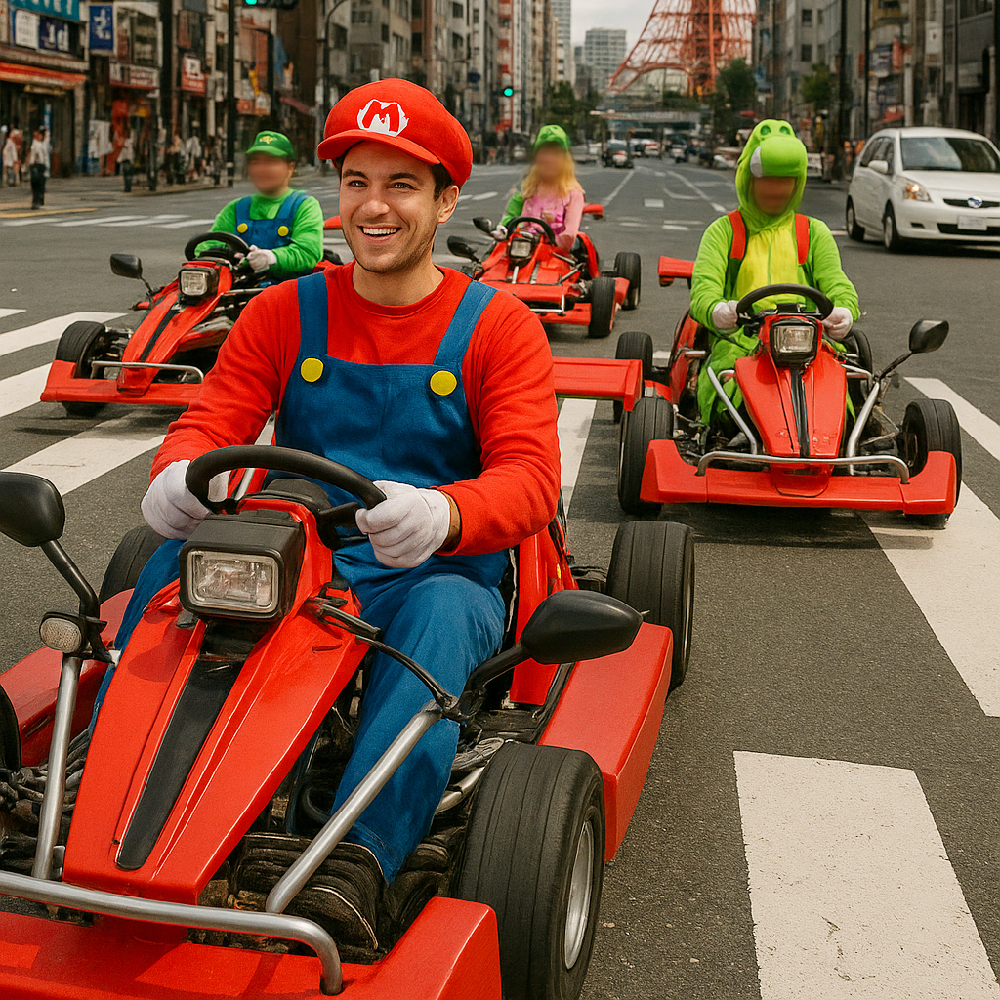

Experiencia de Go-Kart en Japón – Tours Únicos en Kart por las Calles de Tokio
Viva la emoción de conducir un go-kart por las animadas calles de Tokio, una forma única de explorar la ciudad mientras disfruta de la vibrante cultura japonesa. Nuestros tours en go-kart le permiten conducir karts homologados usando disfraces divertidos, combinando turismo y aventura emocionante.
Qué Esperar de los Tours en Go-Kart
Los tours ofrecen una experiencia segura y emocionante, adecuada tanto para principiantes como para conductores experimentados. Los recorridos atraviesan barrios famosos como Shibuya, Akihabara y Odaiba, brindándole una vista cercana de la energía urbana de Tokio desde el volante de un potente go-kart autorizado para circular.
Vehículos y Medidas de Seguridad
Nuestros go-karts cuentan con las últimas funciones de seguridad y cumplen con las leyes japonesas. Antes del tour, recibirá una capacitación completa, casco y equipo de protección. Guías experimentados acompañarán al grupo para garantizar una experiencia fluida y segura durante todo el recorrido.
Reservas y Opciones de Tours
Disponemos de varios tours de diferentes duraciones y rutas, desde paseos de una hora hasta experiencias de medio día. Los tours personalizables le permiten elegir su recorrido según sus intereses, como compras, sitios históricos o distritos de entretenimiento. También ofrecemos tours privados para grupos que deseen una experiencia a medida.
Cómo Participar en los Tours de Go-Kart
Los tours salen desde puntos céntricos de Tokio, fácilmente accesibles en transporte público, como Shinjuku o Shibuya. Es necesario contar con una licencia de conducir internacional o japonesa válida. Se recomienda reservar con anticipación, especialmente los fines de semana y días festivos, para asegurar su lugar y recibir toda la información necesaria.
Por Qué Elegir la Experiencia en Go-Kart
Es una forma inolvidable de descubrir Tokio desde una perspectiva diferente, combinando diversión, cultura y adrenalina. Ideal para quienes buscan emociones fuertes, turistas en busca de una actividad original o grupos que deseen vivir una experiencia memorable en la capital japonesa.
Información Útil para los Visitantes
- 🌸 Puntos de partida: Lugares de encuentro en Shinjuku, Shibuya u Odaiba
- 🌸 Horarios de los tours: 9:00 – 18:00 (varía según el tour)
- 🌸 Requisitos: Licencia de conducir internacional o japonesa válida
- 🌸 Qué llevar: Ropa cómoda, licencia de conducir, gafas de sol
Etiquetas: go-kart Japón, kart Tokio, tours de conducción Tokio, visitas Tokio, kart autoguiado Tokio, experiencias únicas Japón
¿Planea participar en un tour en go-kart en Japón?
Para vivir una experiencia inmersiva y segura, le recomendamos reservar un guía privado certificado de nuestro equipo. Todos nuestros guías son profesionales licenciados, reconocidos oficialmente por el gobierno japonés, y ofrecen tours personalizados según sus intereses. Contacte con su guía seleccionado con anticipación para confirmar disponibilidad y recibir asistencia completa durante su viaje.